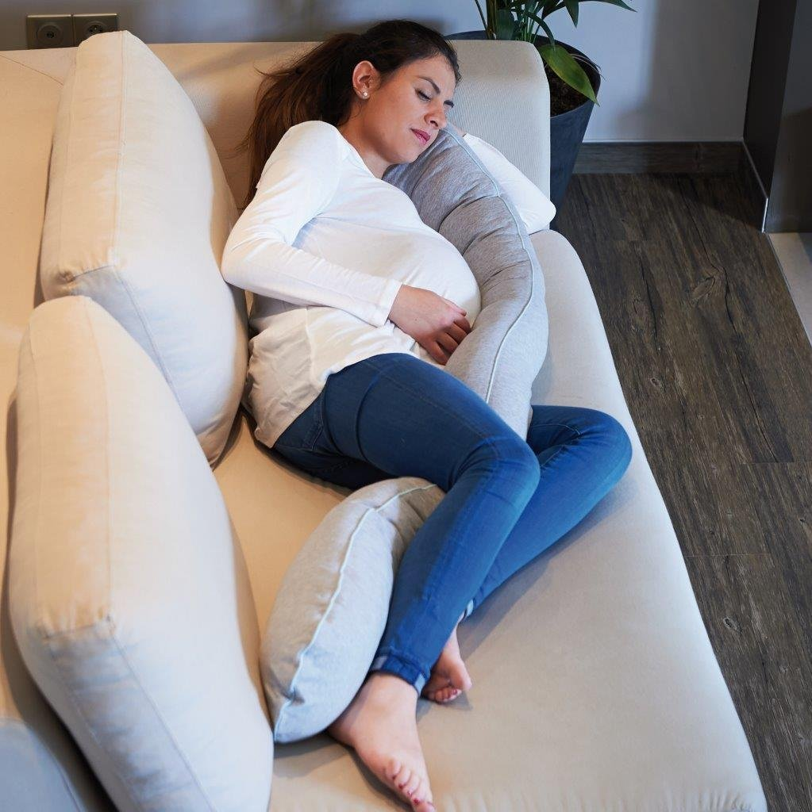
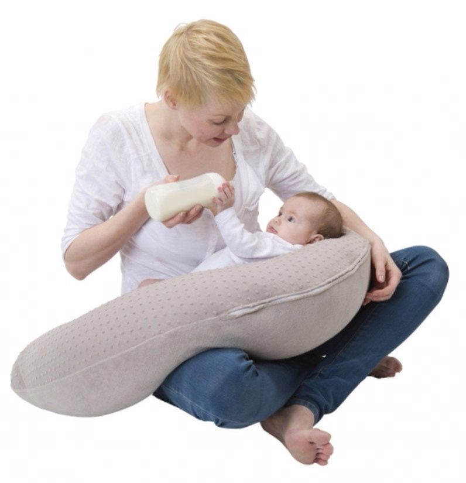

Le coussin d’allaitement aussi appelé coussin de maternité ou coussin de grossesse va devenir au fil des mois un véritable allié pour la future maman.
Avant de l’avoir essayé, on peut se dire que c’est un énième accessoire pour faire dépenser quelques euros. Mais une fois qu’il est entre nos mains et surtout une fois que l’on a découvert le confort qu’il apporte, il est difficile de s’en passer. Avant comme après l’accouchement.
Pour mieux dormir, pour être assise dans un confort optimal, pour allaiter son bébé dans de bonnes conditions pour vous comme pour lui, le coussin de maternité est tout simplement le doudou des mamans pendant plusieurs mois.
Alors qu’est-ce qui fait que ce coussin de maternité est devenu le chouchou des futures mamans ? Pourquoi est-il indispensable avant et après l’accouchement ? Comment le choisir ? Nous répondons à toutes ces questions et nous vous donnons toutes les infos à savoir sur ce coussin pas comme les autres !
Lorsque l’on est enceinte, la prise de poids est souvent importante et le corps change. Le résultat est un mal au dos qui nous gâche la vie toute la journée et qui nous empêche d’avoir une bonne position quand nous nous couchons.
Le coussin de grossesse va remédier à cela en soulageant notre colonne vertébrale lorsque l’on s’allonge. Comment ? En le plaçant sous les jambes, un peu au-dessus des genoux. Chacune trouvera sa meilleure position et celle de son coussin pour que dormir redevienne un plaisir.
Le coussin de maternité apporte également un grand confort en position assise en évitant une trop grande cambrure du dos. Vous pouvez vous servir des extrémités du coussin comme accoudoirs.
Et pour finir, ce coussin va protéger le ventre de la future maman lorsqu’elle s’allonge sur le côté. Le ventre va être calé sur le coussin, la tête aussi tandis que l’autre extrémité est calée entre les jambes.
Comme son nom l’indique, il sera également très apprécié lors de l’allaitement. Il permet à la maman de bien positionner son dos et de soutenir le bras qui maintient son bébé.
Mais le bébé n’est pas oublié et le coussin peut également être utilisé pour sa sieste. Il s’y sentira en sécurité et dormira dans un confort optimal.
Le coussin d’allaitement, contrairement à ce que beaucoup de futures mamans pensent, n’est pas qu’un accessoire qui apporte un confort certain lorsqu’elles allaitent leur bébé. Il est également très utile et pratique pendant la grossesse. D’ailleurs, beaucoup de futures mamans disent s’en servir plus avant l’accouchement qu’après.
Pendant les derniers mois de grossesse, on peut le mettre sous son ventre pour mieux dormir, sous le dos pour soulager les douleurs dorsales et sous les jambes si elles sont lourdes.
Il est également très confortable pour être bien calé pour regarder la télé ou pour lire un livre. Vous l’aurez compris, il s’adapte à toutes vos positions et vos besoins. A gauche, à droite, sous le ventre, dans le dos, sous les jambes, entre les genoux, son rôle est de vous apporter un confort optimal pendant les derniers mois de grossesse.
Le coussin de maternité ne se range pas au placard après l’accouchement. Bien au contraire ! Votre bébé est enfin arrivé ? Le coussin de maternité redevient alors indispensable. Vous pouvez l’utiliser lorsque vous l’allaitez ou lorsque vous lui donnez le biberon.
Il vous permettra de placer votre bébé à la bonne hauteur et de soulager votre bras mais également votre dos. Ce type de coussin peut également être utiliser pour la sieste de bébé. Il s’y sentira comme dans un cocon et il sera en toute sécurité
Si vous attendez des jumeaux où que vous en avez déjà, le coussin d’allaitement vous sera d’une grande aide. En le prenant de grande taille, il vous permettra d’être assise confortablement et les deux extrémités du coussin serviront à caler vos deux bébés. Vos bras seront ainsi reposés.
Vous allez pouvoir aussi regarder votre bébé dormir ou jouer avec lui quand il se réveillera. Si vous avez subi une césarienne, il vous permet de ne pas avoir mal lorsque vous appuyez dessus.
Le coussin de maternité n’est pas utile que pour la maman et son bébé. Il est en effet fréquent que le papa le trouve également très confortable. Il peut l’utiliser pour donner le biberon à son bébé mais vous pourrez lui prêter pour faire sa sieste !
Les grands-mères aiment aussi ce type de coussin. Il leur permet d’avoir une très bonne position pour donner le biberon à son petit-fils ou à sa petite-fille.